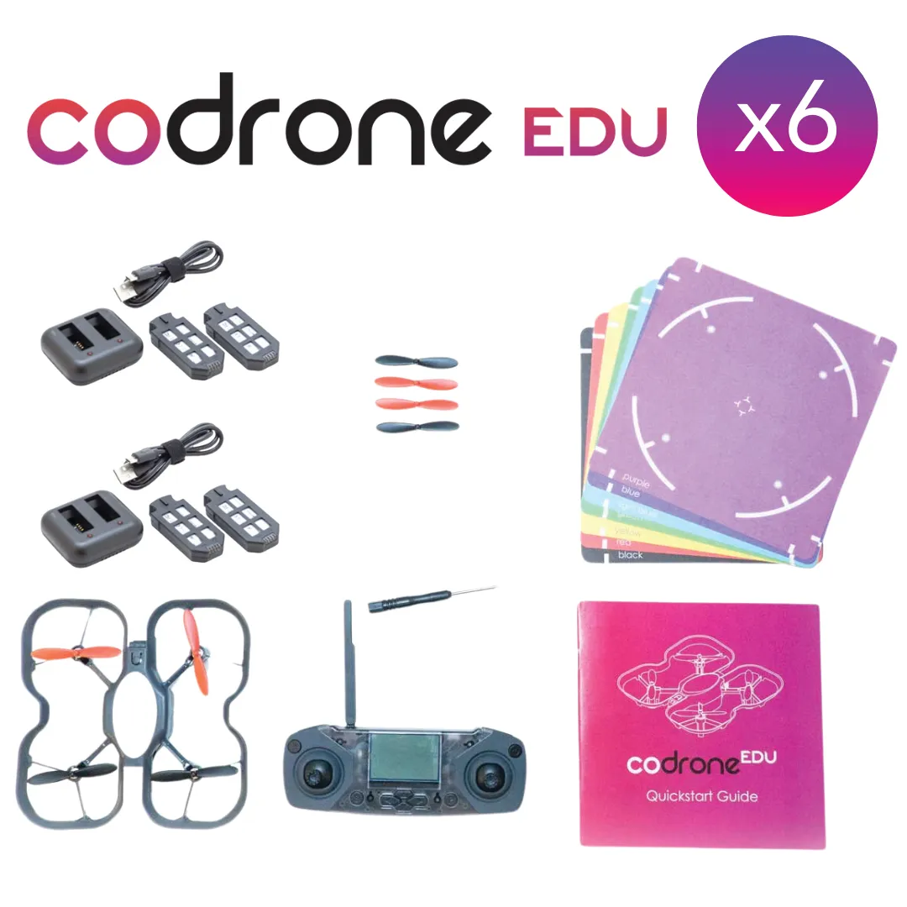

7 érdekesség

Valós idejű adatok
Magasság, akkumulátor szint és más információk folyamatosan visszajönnek, így a programozás és az adatelemzés kéz a kézben jár.
A CoDrone EDU kiváló alapot nyújt drónos bemutatókhoz és projektalapú tanuláshoz. A tanulók különféle programozási feladatokon keresztül próbálhatják ki a drón irányítását, például meghatározott útvonal repülését, mozgások pontos vezérlését vagy szenzoradatok felhasználását egyszerű autonóm feladatokhoz.
A CoDrone EDU egy kifejezetten oktatási célokra fejlesztett, programozható drón, amely ideális választás iskolák, szakkörök és STEM programok számára. A CoDrone EDU lehetőséget ad arra, hogy a tanulók valós drónon keresztül sajátítsák el a programozás, az algoritmikus gondolkodás alapjait.
•Python-alapú programozás
A CoDrone EDU elsősorban Blockly for Robolink
oldalon programozható.
•Valós szenzoradatok:
Gyorsulásmérő, giroszkóp, magasságmérő és színérzékelő segíti a valós idejű adatfeldolgozást és döntéshozatalt.
•Biztonságos beltéri repülés:
Könnyű szerkezet és stabil irányítás, amely ideálissá teszi oktatási környezetben.

Magasság, akkumulátor szint és más információk folyamatosan visszajönnek, így a programozás és az adatelemzés kéz a kézben jár.

No Code Website Builder